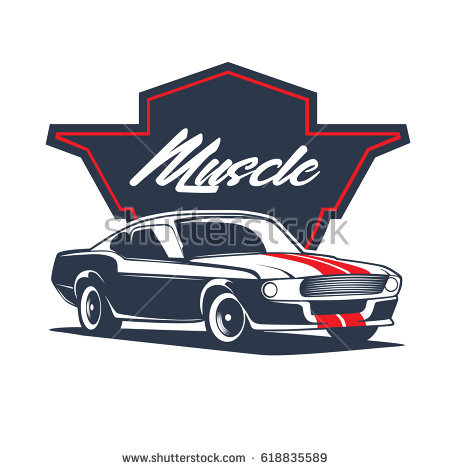

Япония подарила нам великолепную автомобильную культуру Jdm. Японские автомобили, отлиичающиеся выдающейся надежностью так же не обделены прекрасными характеристиками. Великолепный вид японских автомобилией заставляет трепещать сердца автолюбителей по всему миру. и какие нибудь продолжение, а то слишком много текста.

Америка в свою очередь подарила нам прожорливых muscleCARs. Мускул кары обладают отличной мощностью в низу, и быстрые они конечно, но всем и так понятно, что япония впереди планеты всей.